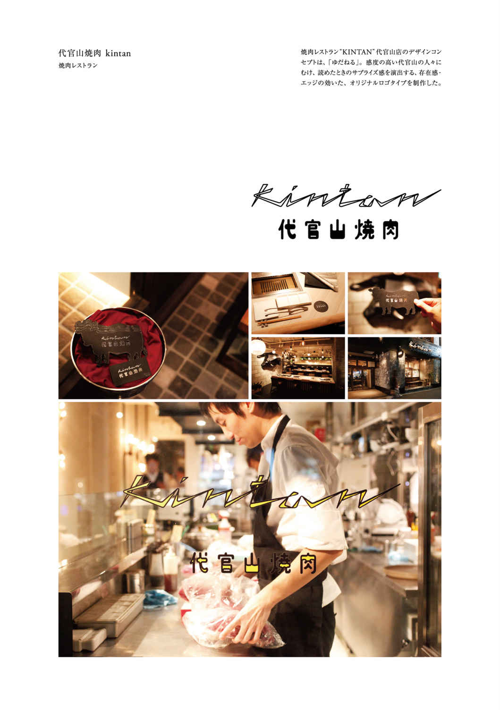
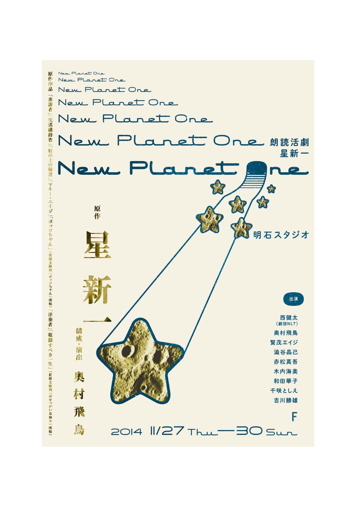

| ロゴマーク制作依頼 ブランディング・グラフィックデザイン 永井弘人（アトオシ）制作事例 | |
| 永井弘人（アトオシ） | |
| (2018) | |



・ 永井弘人（アトオシ） とは
永井弘人（アトオシ）は、「ロゴマーク制作・ブランディング」を得意とする、「ディレクター・グラフィックデザイナー」
です。私の"デザインへの想い"をお伝えします。
「デザインで、後押しする。」
例えば、自ら立ち上げたブランドを告知する時。例えば、オーナーさんが飲食店を改装する時。
いずれも、もっと認知されたい、売上げを伸ばしたい、というシーンに沿った目的を持っています。人が何かを行う時、必ず目的があるのではないでしょうか。
デザインには、「目的を形にする力」があると考えます。 その力によって「人の目的（＝ こうなったらいいな、と思うこと）を達成させる後押し」になりたい。そのような想いで「アトオシ」を設立しました。
人が思う、こうなったらいいな、をデザインする。デザインをもっと身近に感じていただき、貢献し、人とのつながりも映し出す。
アトオシはそんな存在であり続けたいと考えています。
・ 永井弘人（アトオシ） 特長
「ロゴマークを軸とした展開。」
コンセプトや理念を視覚化させたロゴマーク。 そのロゴマークから派生される軸のブレない展開や、統一された世界観を創ることによって、より効果的に目的達成への道を開きます。
人々に強く印象づける、ミッションを共有したプランニング。価格競争からの脱却を狙う、長期的利益を見込んだブランディング。
それが、アトオシの生み出すデザインの特長です。
・ デザイン料について
私はもっと多くの企業・店舗から一般生活者まで全ての皆様に、デザインの価値に気づいていただきたいと心より思っており、大小全ての案件に対して、分け隔てなく精一杯取り組ませていただいております。
デザインが使われる企業・店舗等の規模や用途によって、貢献度は大きく変わってきます。お客様のご予算に応じて柔軟に対応させていただいているので、明確な料金体系は載せておりません。
予算が少ないからといってデザインの質を落とすというようなことは一切ございません。お客様がご納得いくまで、最後まで責任を持ってお付き合いさせていただいております。
個人規模のお客様との実績も多数ございます（＊
参考：「クライアントの声、想いのストーリー。」はこちら
）。どうぞ安心して、お気軽にご相談ください。ヒアリング・打ち合わせ・お見積もりまで無料にて行わせていただきます。
・ デザイン依頼をお考えの方へのメッセージ
「はじめて、デザインを取り入れる。」
毎日を過ごすことになる、家の購入。一生の想い出となる、結婚式までの準備。
少し大げさかもしれませんが、デザインを取り入れることは、そのようなシーンに近いと私は考えます。つまり、それぐらい重要で、それぐらい楽しく、ドキドキワクワクすること。なにより、「生活をより豊かにする」こと。
ありがたいことに近年は、様々な分野の方から、お声かけいただく機会が増えてまいりました。「はじめて、デザインを取り入れる」方たちがそのほとんどです。
人に近い、良質なデザインで。より多くの喜びを生み出せるよう。これからも、アトオシは真摯に取り組んでいきます。
・ お問い合わせ（ロゴマーク制作・ブランディングのご依頼・ご相談）
デザインを取り入れることで、こうなったらいいな、と思うことがありますか?
その思いをヒアリングさせていただくだけでも、私の貴重な財産です。
ロゴマーク制作依頼・ブランディング、取材・掲載・執筆・出演等、各種御相談について、お気軽にお声かけください。
◎ 永井弘人（アトオシ） お問い合わせ先
・ デザイン事例紹介サイト内： コンタクトフォーム
・ メールアドレス： info@atooshi.com
・ 電話：03-6809-8115（月～土 10:00～20:00）
＊ お電話について、時間帯によっては出れない場合もございます。その際にはメッセージを残していただくか、上記コンタクトフォームよりお問い合わせ内容をお送りいただければ、折返しご連絡いたします。
＊ 1営業日以上返信がない場合、 誠に恐れ入りますが、03-6809-8115 よりお電話にて直接ご連絡いただけると幸いです。
＊ お問い合わせ内容によっては、ご返答できない場合もございます。また、コンペ・相見積のお仕事は、原則お受けいたしません。予め、ご了承いただけると幸いです。
＊
デザイン依頼やご相談前のご参考に、
「クライアントの声、想いのストーリー。」
をご覧いただけると幸いです。
・ 著者 永井弘人（アトオシ） プロフィール
永井弘人（アトオシ）ながいひろと（あとおし）
アトオシ ディレクター・グラフィックデザイナー
日本タイポグラフィ協会 正会員
東京デザイナー学院 非常勤講師
1984年、東京都生まれ。明治大学・東京デザイナー学院卒業後、デザイン会社2社（メーカー・商業施設の広告・グラフィック制作 ／ 飲食・物販・医院における、ブランドコンサルティングを軸にした制作） を経て、2011年に「アトオシ」設立。
「ロゴマークを軸とした展開。」というコンセプト にて、飲食店・物販店・医院・中小企業等、VI・CI・ブランディングを中心としたグラフィックデザインを制作・展開し続けている。
また、「日常とデザインを拡げる。」をモットー に、執筆・トーク出演など笑いを絡めた活動を通し、"デザイナーではない人"に、デザインの新たな楽しみ方を提案中。
グッドデザイン賞受賞、日本タイポグラフィ年鑑ベストワーク賞（部門最優秀賞）
受賞
・入選、東京TDC賞入選、日本パッケージデザイン大賞入選、他多数受賞。著書「[新版] デザイナーになる！
」（MdN）
執筆・出版
、他多数出版。
◎ 永井弘人（アトオシ） 「ロゴマーク・ブランディング・グラフィックデザイン」事例紹介 オフィシャルWebサイト
◎ 永井弘人（アトオシ） "デザイナーではない人"にデザインを伝える「SNS」
・
Twitter（ツイッター）
・
Facebook（フェイスブック）
・
YouTube（ユーチューブ）
・
Instagram（インスタグラム）
・
note（ノート）
◎ 永井弘人（アトオシ） "デザイナーではない人"にデザインを伝える「連載コンテンツ」
「デザインを身近に感じ、日常の中にデザインを取り入れたくなる」。そんな気持ちを後押しする雑文集。グラフィックデザイナーのリアルな日常を、フリートークでさらけ出します。ときに真面目に、たまにエロく、ほぼくだらない。noteにて、大好評のおすすめマガジンです。
グッドデザイン賞受賞、デザイン入門書を執筆・出版した、現役デザイナー「アトオシ」による、「日常とデザインを拡げる」チャンネル。"デザイナーではない人"に、「デザイン思考」を「日常視点・笑い・ユーモア」を交えて伝えます。きっと、"日常をより豊かにするヒント"が見つかるはず！
・ 永井弘人（アトオシ） メディア掲載
今まで、クライアントの方々とともに制作してきた、永井弘人（アトオシ）のロゴマーク・ブランディング・グラフィックデザイン事例は、業界内外より、「デザイン賞受賞・デザイン書籍掲載」 といった形で、評価・好評をいただいてまいりました。
「メディアに掲載されたデザイン事例を見て、"その企業を知った"、"そのお店に訪れた"」
という声も多数お聞きします。より良いデザインをつくることは、「様々なメリット、正の循環を築き上げることにもつながる」
、と考えております。
・ 「受賞年鑑 GOOD DESIGN AWARD」掲載（日本デザイン振興会／デザイン年鑑書籍）
・ 「日本タイポグラフィ年鑑」掲載（日本タイポグラフィ協会／デザイン年鑑書籍）
・ 「年鑑日本のパッケージデザイン」掲載（六耀社／デザイン年鑑書籍）
・ 「Tokyo TDC」掲載（東京タイプディレクターズクラブ／デザイン年鑑書籍）
・ 「成功するDMの極意」掲載（宣伝会議／デザイン年鑑書籍）
・ 「『BranD』 Magazine」掲載（Sendpoints Publishing Co., Ltd.／香港デザイン誌）
・ 「実例つきロゴのデザイン」掲載（パイ インターナショナル／デザイン書籍）
・ 「ロゴと展開 ブランドイメージを伝えるデザイン」掲載（グラフィック社／デザイン書籍）
・ 「デザインノート 日本全国のロゴ & マーク特集」掲載（誠文堂新光社／デザイン誌）
・ 「スタイル別 ブランディングデザイン」掲載（パイ インターナショナル／デザイン書籍）
・ 「日本語のロゴ・メイキング 漢字・ひらがな・カタカナのロゴづくり」掲載（グラフィック社／デザイン書籍）
・ 「魅せる日本語のレイアウト 漢字・ひらがな・カタカナをデザインする」掲載（グラフィック社／デザイン書籍）
・ 「魅せる日本語タイトル 漢字・ひらがな・カタカナのデザインアイデア」掲載（グラフィック社／デザイン書籍）
・ 「クリエイター独立マニュアル」掲載（グラフィック社／デザイン書籍）
・ 「タイポグラフィックス・ティー」掲載（日本タイポグラフィ協会／デザイン誌）
・ 「地域発 ヒット商品のデザイン」掲載（パイ インターナショナル／デザイン書籍）
・ 「一瞬で心をつかむ パッケージデザインの見本帳」掲載（エムディエヌコーポレーション／デザイン書籍）
・ 「パケ買いしたくなる！ ヒット商品のデザイン」掲載（パイ インターナショナル／デザイン書籍）
・ 「ショップイメージ グラフィックス in Tokyo+」掲載（パイ インターナショナル／デザイン書籍）
・ 「デザインで地域を元気にする、プロジェクトと仕掛人たち」掲載（パイ インターナショナル／デザイン書籍）
・ 「名刺・封筒・ビジネス文具デザインコレクション ビジネスツールは仕事の武器！」掲載（グラフィック社／デザイン書籍）
他多数掲載
・ 永井弘人（アトオシ） 著書一覧
◎ ［新版］ デザイナーになる！ 伝えるレイアウト・色・文字の大切な基本と生かし方（MdN） ＊ オススメ本！
「Amazon新着ランキング」で「1位」獲得！ グラフィックデザインの入口を、"いま、デザイナーを目指す、すべての人へ"むけて、カジュアルにやさしく、親しみ満載で紹介した、「デザイン入門の入門書」。
「心構え ／ 基本知識 ／ 作例解説」のわかりやすい"3部構成"。さらに、"心豊かに、デザイナーを続ける"ためのコラム付き。グラフィックもウェブも、様々なデザイン分野に役立つ、オススメの一冊です！
◎ 「デザイナーではない人」にデザインを伝える本 ＊ オススメ本！
「『デザイナーではない人』にデザインを伝える」ための、「デザイン構築にまつわる、思考・解説・雑文・ストーリー」を書いた本です。
これ一冊を読むと、「へぇー！こうやって、デザインってつくられてんだ。」「あっ、デザイナーにも、こんな人いるんだ。わりと声かけやすそうじゃん。」「ときに真面目に、たまにエロく、ほぼくだらない。」という感情をいだき、学生さんや職種を問わず、どのような方にも、デザインやデザイナーに対する、新しい感度が芽生え、日常に生かせる発見があるはずです。
◎ 日常とデザインを拡げる雑文集 ＊ オススメ本！
「デザインを身近に感じ、日常の中にデザインを取り入れたくなる。」そんな気持ちを後押しする雑文集。日常の中で、なんかいいな、と感じる瞬間こそ、より良いロゴ・デザインをうむ大切な栄養素。私はそう考えています。
グラフィックデザインをメインに行っている人（永井弘人）が、普段なにを考えて、どんな行動をしているか。くだらなさあふれる、リアルなデザイナーの日常をさらけ出します。
「日常とデザインを拡げる雑文集」の続編です。デザイナーが語る、日常視点のエッセイ・コラムですので、本書から読んでいただいても大丈夫です。
「最高の暇つぶし、デザイン思考の気づき」を捧げます。"当たり前の日常"と向きあう大切さを伝える、「そのやり方を学べる漫画」も特別収録しました。
「一人の"何の取り柄もない男"が、高校・大学・専門学校・就職・転職を経て、グラフィックデザインで独立するまでの"心情・理由・成長"」を書いた実話本です。
グラフィックデザイナーになろうと決めた、学生時代の出来事、デザイン会社在職中の気づきなど、「現場視点のリアリティと、真面目とカジュアルを行き来する文章」で、こまかく書きました。デザイナーを目指す方、学生さん、「独立に至るまでの"心情・理由・成長"」を詳しく知りたい方にオススメのお話しです。
◎ 「デザイン仕事」の獲得方法。"やりたい仕事"を掴む、コツとポイント。
「"心豊か"に、『デザイナーとして生き続ける』」ために、「自分が本心で、"やりたい"と感じる、『デザイン仕事を獲得する』」方法のコツとポイント、具体的な流れを書いた本です。
現役デザイナーである著者が歩んできた、実際の体験談をもとにした、リアルな話し。自分が"やりたい！ と感じる仕事"を、どうやって獲得してきたか？ 「自分が望む、"やりたい仕事"を依頼されるまでの流れ・方法」を知りたい方に向けて書きました。
「10年、自分の意志で、デザイナーを続けられる状態」にするため、「バランスの取れた、デザイン力」をつけるコツとポイント、具体的な方法を書いた本です。
就職率100%を出している、デザイン専門学校の場「ユーム」。そこで実際に学生たちにやってもらっている全内容を、「明確な意図と手順」とともに公開。しっかりとお伝えします。
◎ ロゴマーク制作依頼 ブランディング・グラフィックデザイン 永井弘人（アトオシ）制作事例 ＊ 無料閲覧可！
「開業・開店・起業、新規ブランド立ち上げ」などの際、「ロゴマーク・ブランディング・グラフィックデザインの方向性・イメージのご参考」に、ご覧いただくための本です。
人々に強く、お店や企業の「想いを印象づける」ロゴマーク。価格競争からの脱却を狙う、「長期的利益」を見込んだブランディング。それらを強みとした、アートディレクター・グラフィックデザイナー「永井弘人（アトオシ）の作品事例集」です。
・ 奥付
ロゴマーク制作依頼 ブランディング・グラフィックデザイン 永井弘人（アトオシ）制作事例
2019年6月9日 発行
著者：永井弘人
発行：アトオシ
〒
158-0092 東京都世田谷区野毛 2-10-11-306
電話：03-6809-8115
Webサイト：atooshi.com
メールアドレス：info@atooshi.com
© atooshi. All rights reserved.